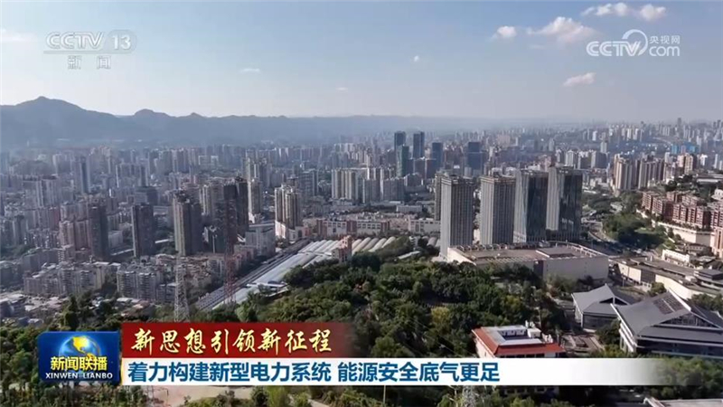
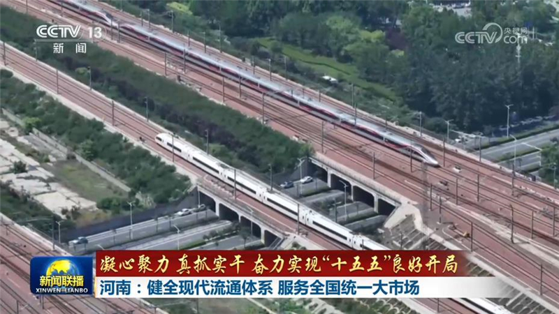
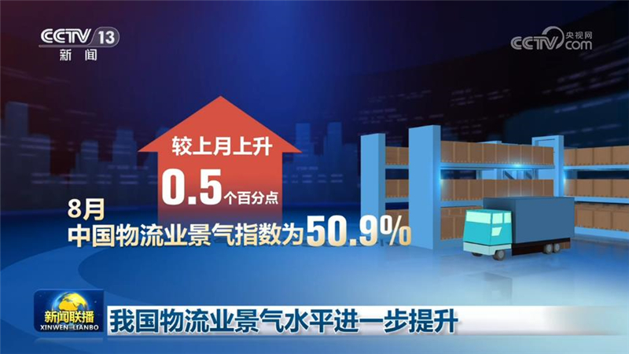
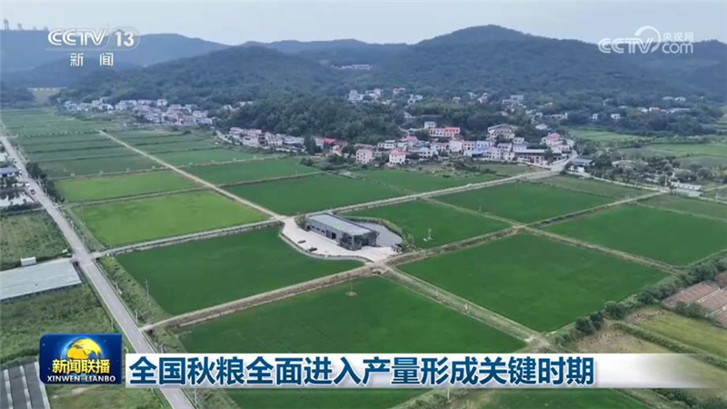
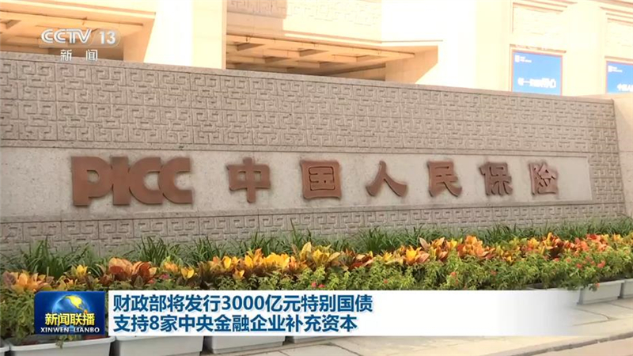
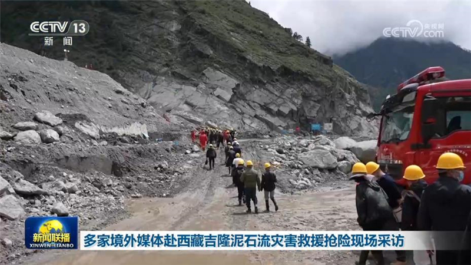
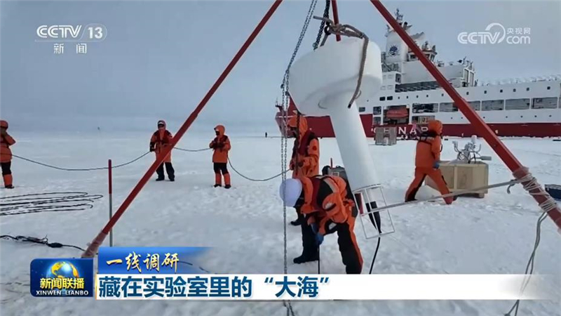
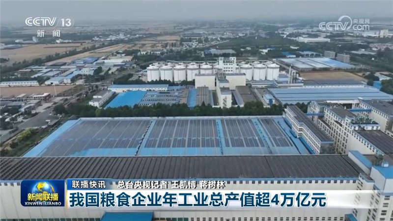
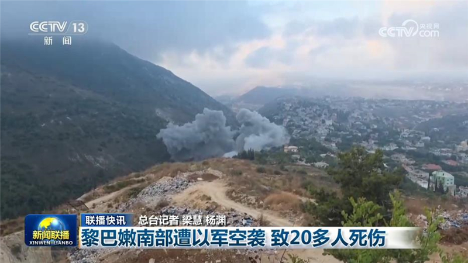

01

【新思想引领新征程】着力构建新型电力系统 能源安全底气更足
习近平总书记强调，要加快构建清洁低碳、安全充裕、经济高效、供需协同、灵活智能的新型电力系统。今年夏天，面对国际能源市场波动加剧，极端高温天气频发的复杂形势，我国新型电力系统的电力保障作用进一步发挥，为从容应对迎峰度夏，有力保障百姓生活和经济社会发展提供了坚实支撑。


习近平总书记强调，要加快构建清洁低碳、安全充裕、经济高效、供需协同、灵活智能的新型电力系统。今年夏天，面对国际能源市场波动加剧，极端高温天气频发的复杂形势，我国新型电力系统的电力保障作用进一步发挥，为从容应对迎峰度夏，有力保障百姓生活和经济社会发展提供了坚实支撑。

“十五五”规划纲要提出，要坚决破除阻碍全国统一大市场建设卡点堵点，健全高效顺畅的现代流通体系，完善国家物流枢纽网络。“十五五”开局之年，河南加快发展壮大枢纽经济、通道经济，全力打造更具竞争力的内陆开放高地。

中国物流与采购联合会近日公布8月份中国物流业景气指数。指数继续位于扩张区间，并且扩张加快，我国物流业景气水平进一步提升。

秋粮产量占全年粮食产量的四分之三左右。白露将至，秋粮已全面进入产量形成关键时期，新装备新技术助力田管提质增效，夯实丰收基础。
商务部等七部门发布《关于推动商品消费扩容升级的实施意见》（以下简称《实施意见》），提出多项具体措施，推动“十五五”时期商品消费规模稳步扩大。
记者从工业和信息化部获悉，目前，我国已建成高效完备的动力电池产业体系。最新数据显示，2026年1—7月份，我国动力电池产业保持良好增长态势，累计销量达到790.4吉瓦时，同比增长37.1%。

财政部将于近期发行3000亿元特别国债，支持中国工商银行、中国进出口银行、中国人保等8家中央金融企业补充核心一级资本，进一步充实其资本金。

记者今天（9月6日）从西藏自治区吉隆县“8·26”泥石流灾害应急救援指挥部了解到，截至9月5日18时，灾害致43人遇难、519人失联。

把海洋开发利用好，并不是一件容易的事。今天（9月6日）的《一线调研》，我们走进海岸与海洋工程全国重点实验室，看看它是如何助力我国深海装备不断走向更深的海域。

我国粮食企业年工业总产值超4万亿元
美国中央司令部5日发表声明称，美军一艘航母和一艘导弹驱逐舰在地区水域巡逻时遭伊朗弹道导弹袭击，美国军舰躲过攻击，没有人员伤亡。作为报复行动，美军摧毁了3艘伊朗油轮。
俄罗斯总统普京、乌克兰总统泽连斯基5日分别宣布，从即日起暂停打击对方首都三天。

黎巴嫩南部遭以军空袭 致20多人死伤